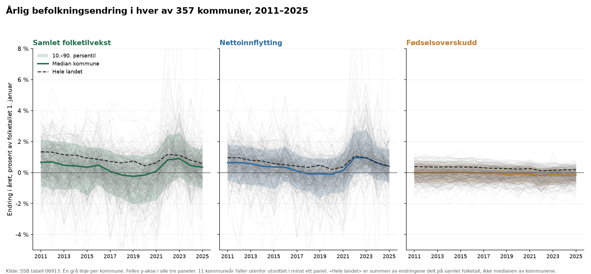
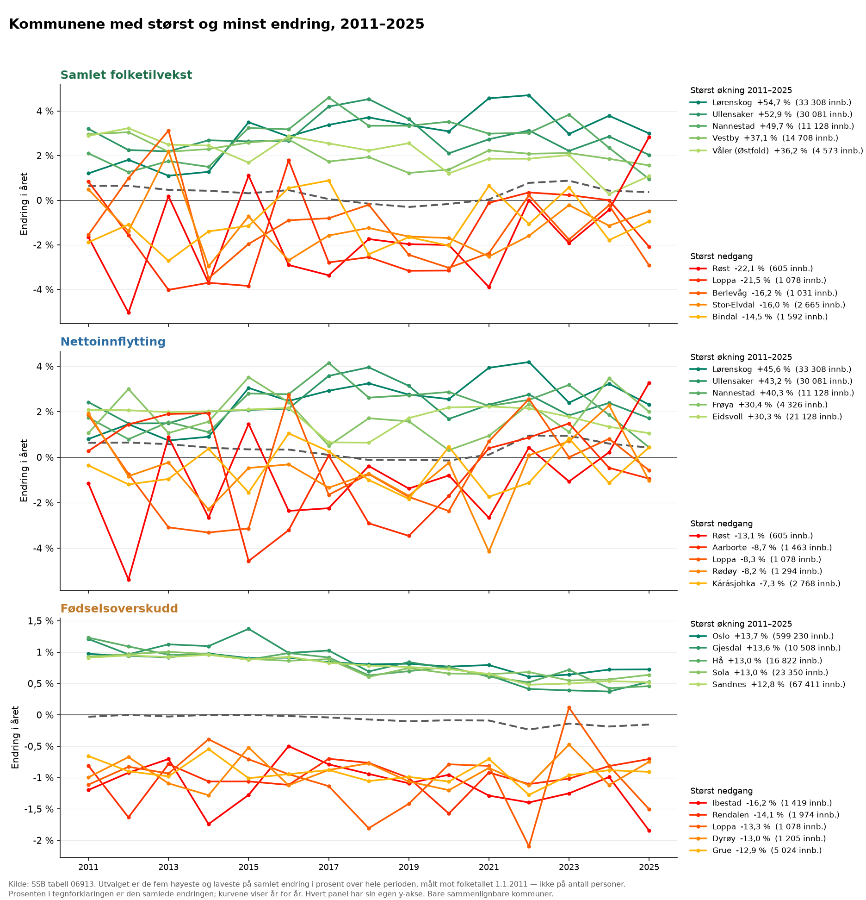

Befolkning · SSB tabell 06913
Befolkningsvekst i norske kommuner, 2011–2025
Alle 357 kommuner i 2024-inndelingen. Folkemengde 1.1.2011 målt mot 1.1.2026. Det egentlige arbeidet i denne saken er ikke å regne ut prosentvekst, men å vite hvilke kommuner man ikke kan regne prosentvekst for.
Funn
- Norge vokste fra 4 920 305 til 5 627 400 innbyggere, 707 095 personer eller +14,4 %.
- Veksten er flytting, ikke fødsler: av de 707 095 nye innbyggerne kommer 491 174 fra nettoinnflytting og 214 379 fra fødselsoverskudd — 69 mot 30 prosent. De siste 1 542 er restleddet SSB ikke fordeler.
- Fødselsoverskuddet er negativt i 200 av 323 sammenlignbare kommuner. I 84 kommuner er nettoinnflyttingen alene større enn hele veksten — de vokser altså på tross av at det dør flere enn det fødes.
- Veksten er skjevt fordelt: 264 av 323 kommuner vokste saktere enn landet, og 119 hadde direkte nedgang.
- Sterkest vekst: Lørenskog (Akershus), +54,7 % — men fra 33 308 innbyggere. Svakest: Røst (Nordland), -22,1 %.
- Fylkesvis spenner det fra +27,0 % i Akershus til +2,5 % i Finnmark.
Fylker
| Fylke | Kommuner | 1.1.2011 | 1.1.2026 | Vekst | Herav flytting |
|---|---|---|---|---|---|
| Akershus | 21 | 589 763 | 749 207 | +27,0 % | 124 850 |
| Oslo | 1 | 599 230 | 728 714 | +21,6 % | 47 732 |
| Rogaland | 23 | 436 087 | 508 922 | +16,7 % | 34 159 |
| Østfold | 12 | 274 149 | 316 448 | +15,4 % | 41 821 |
| Agder | 25 | 282 456 | 323 930 | +14,7 % | 30 416 |
| Vestfold | 6 | 227 211 | 259 332 | +14,1 % | 30 686 |
| Buskerud | 18 | 239 185 | 272 981 | +14,1 % | 29 801 |
| Trøndelag | 38 | 429 928 | 489 166 | +13,8 % | 40 920 |
| Vestland | 43 | 590 775 | 658 342 | +11,4 % | 36 775 |
| Møre og Romsdal | 27 | 251 389 | 273 169 | +8,7 % | 16 447 |
| Troms | 21 | 158 879 | 171 218 | +7,8 % | 7 656 |
| Telemark | 17 | 169 185 | 177 923 | +5,2 % | 11 422 |
| Innlandet | 46 | 362 696 | 379 488 | +4,6 % | 29 577 |
| Nordland | 41 | 235 955 | 243 272 | +3,1 % | 8 101 |
| Finnmark | 18 | 73 417 | 75 288 | +2,5 % | 811 |
Klikk på en kolonneoverskrift for å sortere.
År for år


Metode
- Kilde: SSB tabell 06913, «06913: Befolkning og endringer, etter region og år». SSB oppdaterte tabellen 2026-04-15; hentet 2026-08-11T21:27:29Z, sha256 64045d19d407…
- Modellene
mart.befolkning_kommune_aar,mart.befolkning_fylke_aarogmart.befolkningsvekst, bygget av statman 2026-08-11 21:27:29Z. Råversjonen over er den byggeloggen oppgir, ikke den som tilfeldigvis er nyest nå. - Kommuneinndeling: SSBs kodeliste
agg_KommSummerHist(«Kommuner 2024, sammenslåtte tidsserier»). Den summerer historikken til sammenslåtte kommuner opp til dagens grenser, så kommunereformene i 2018 og 2020 gir ikke seriebrudd. Fylkestallene brukeragg_KommFylkerHist, som gjør det samme for fylker — ikkeagg_Fylker2024, som bare har tallene for fylkene slik de faktisk het det året og summerer seg til 1,5 millioner i 2011. - Kodelista reverserer derimot ikke delinger, og fanger ikke grensejusteringer. Vi finner dem i stedet i tallene: der endringen i folkemengde ikke er lik folketilveksten SSB oppgir, har grensene flyttet seg. Differansen ligger i kolonnen
grenseavvik. - Vi krever ikke at avviket er null, men at det største enkeltavviket er under 0,5 % av folketallet. Uten en toleranse ville en grensejustering på 29 personer kastet Drammen ut av statistikken. Kommuner over terskelen er merket
sammenlignbar = falseog holdt utenfor rangering og topplister; de nøyaktige avvikene står igrenseavvik_sumoggrenseavvik_maks_pstfor alle kommuner. - Det ga 34 utelatte kommuner av 357.
- Kontroll: for de 351 kommunene som har folketall hele perioden, summerer grenseavvikene seg til -7 personer. Grensejusteringer flytter folk mellom kommuner, så summen skal være null. De resterende 53 846 tilhører de 6 kommunene som ble dannet av delte kommuner i 2020, og er de samme personene som mangler i kommunetabellen før det året.
| Kommune | Fylke | Grenseavvik | Største enkeltavvik | Hva som skjedde |
|---|---|---|---|---|
| Haram | Møre og Romsdal | +5 | 99,7 % | Skilt ut fra Ålesund 1.1.2024, egen kommune også før 2020 |
| Ålesund | Møre og Romsdal | -21 | 16,6 % | Haram skilt ut igjen 1.1.2024 |
| Vestnes | Møre og Romsdal | +411 | 6,3 % | Grensejustering 1.1.2021 |
| Stad | Vestland | +533 | 6,0 % | Grensejustering 1.1.2020 |
| Rauma | Møre og Romsdal | -411 | 5,5 % | Grensejustering 1.1.2021 |
| Tønsberg | Vestfold | +2 061 | 4,3 % | Stokke delt mellom Tønsberg og Sandefjord 1.1.2017 |
| Midt-Telemark | Telemark | -442 | 4,0 % | Grensejustering 1.1.2020 |
| Sandefjord | Vestfold | -2 236 | 3,5 % | Stokke delt mellom Tønsberg og Sandefjord 1.1.2017 |
| Notodden | Telemark | +442 | 3,5 % | Grensejustering 1.1.2020 |
| Nes | Akershus | +682 | 3,1 % | Grensejustering 1.1.2020 |
| Kinn | Vestland | -533 | 3,0 % | Grensejustering 1.1.2020 |
| Hjelmeland | Rogaland | -77 | 2,9 % | Grensejustering 1.1.2020 |
| Høyanger | Vestland | +110 | 2,7 % | Grensejustering 1.1.2020 |
| Evje og Hornnes | Agder | +92 | 2,5 % | Grensejustering 1.1.2019 |
| Eidfjord | Vestland | +22 | 2,4 % | Grensejustering 1.1.2022 |
| Birkenes | Agder | -92 | 1,8 % | Grensejustering 1.1.2019 |
| Tvedestrand | Agder | +101 | 1,6 % | Grensejustering 1.1.2025 |
| Risør | Agder | -101 | 1,5 % | Grensejustering 1.1.2025 |
| Strand | Rogaland | +162 | 1,3 % | Grensejustering 1.1.2020 |
| Ås | Akershus | -213 | 1,0 % | Grensejustering 1.1.2020 |
| Volda | Møre og Romsdal | +81 | 1,0 % | Grensejustering 1.1.2020 |
| Ørsta | Møre og Romsdal | -104 | 1,0 % | Grensejustering 1.1.2020 |
| Sogndal | Vestland | -110 | 0,9 % | Grensejustering 1.1.2020 |
| Lillestrøm | Akershus | -682 | 0,8 % | Grensejustering 1.1.2020 |
| Indre Fosen | Trøndelag | +69 | 0,7 % | Grensejustering 1.1.2020 |
| Holmestrand | Vestfold | +148 | 0,6 % | Grensejustering 1.1.2020 |
| Ullensvang | Vestland | -89 | 0,6 % | Grensejustering 1.1.2020 |
| Nærøysund | Trøndelag | -52 | 0,5 % | Grensejustering 1.1.2020 |
| Vestre Slidre | Innlandet | -11 | 0,5 % | Grensejustering 1.1.2021 |
| Orkland | Trøndelag | +18 217 | — | Ny kommune 2020 av Orkdal, Meldal m.fl. og deler av Snillfjord |
| Narvik | Nordland | +21 845 | — | Ny kommune 2020 av Narvik, Ballangen og deler av Tysfjord |
| Hábmer - Hamarøy | Nordland | +2 766 | — | Ny kommune 2020 av Hamarøy og deler av Tysfjord |
| Hitra | Trøndelag | +5 050 | — | Utvidet 2020 med deler av Snillfjord |
| Heim | Trøndelag | +5 963 | — | Ny kommune 2020 av Hemne, Halsa og deler av Snillfjord |
De 34 kommunene som er holdt utenfor rangeringen, og hvorfor.
- 53 011 personer mangler i kommunetabellen i 2011. Kommuner som ble delt i 2020 — Tysfjord og Snillfjord — har en historikk som ikke lar seg tilordne én kommune i dagens inndeling. SSB legger den i samlekategorien «Delte kommuner og uoppgitt», som ikke er noen kommune og derfor ikke er med her. Summen av de 357 kommunene er altså 53 011 lavere enn Norges folketall til og med 2019, og null lavere fra 2020. Landstallene og fylkestabellen her er hentet fra fylkesserien, som har dem med.
- Ingen justering for at kommuner er ulike i størrelse. Prosentvekst og absolutt vekst gir to forskjellige topplister; CSV-en har begge.
Forbehold
Det som må stå ved siden av tallene for at de skal kunne forsvares. Hentet fra metrikkatalogen, ikke skrevet på nytt her.
Befolkningsvekst over perioden andel (0.144 = 14,4 %)
Kilde: SSB tabell 06913, kodeliste agg_KommSummerHist (Kommuner 2024)
- Måler 1.1.2011 mot 1.1.2026, altså veksten gjennom kalenderårene 2011–2025. Periodens lengde står i kolonnene aar_start og aar_slutt, ikke i navnet på metrikken.
- Gjelder bare kommuner med sammenlignbar = true. 34 av 357 kommuner byttet grenser eller mangler historikk, og har rangering = null. Prosenten deres måler grenseendringen, ikke befolkningsutviklingen.
- Sammenlignbar krever at det største enkeltavviket er under 0,5 prosent av folketallet, ikke at det er null. Terskelen er en vurdering. De faktiske avvikene ligger i grenseavvik_sum og grenseavvik_maks_pst, så en strengere eller løsere grense kan settes uten å bygge om noe.
- Prosentvekst er ustabil i små kommuner. En kommune med 500 innbyggere flytter seg 10 prosent på 50 personer. Oppgi alltid folkemengden sammen med prosenten.
- Enkeltinstitusjoner slår gjennom. Råde vokste 9 prosent i 2022 og falt 5 prosent i 2023 fordi ankomstsenteret der ble fylt og tømt. Slike utslag er ekte registrerte bosatte, men de er ikke det folk leser inn i «befolkningsvekst».
Fødselsoverskudd, sum over perioden personer
Kilde: SSB tabell 06913, kodeliste agg_KommSummerHist (Kommuner 2024)
- Levendefødte minus døde blant registrerte bosatte i kommunen.
- Negativt i 200 av 323 sammenlignbare kommuner i 2011–2025. Det er normaltilstanden i norske kommuner, ikke et avvik som skal forklares.
Nettoinnflytting, sum over perioden personer
Kilde: SSB tabell 06913, kodeliste agg_KommSummerHist (Kommuner 2024)
- Flytting mellom norske kommuner teller likt med inn- og utvandring. Summen over alle kommuner er derfor ikke nettoinnvandringen til Norge, og en kommunes tall sier ingenting om hvor folk kom fra.
- Fødselsoverskudd pluss nettoinnflytting er ikke alltid nøyaktig lik folketilveksten. Restleddet er lite — 1 person i median per kommuneår, 267 på det meste — og ligger i kolonnen restledd i stedet for å bli fordelt på komponentene.
Folkemengde i kommunen personer
Kilde: SSB tabell 06913, kodeliste agg_KommSummerHist (Kommuner 2024)
- Bestand per 1. januar i året på raden. Endringstallene på samme rad gjelder derimot kalenderåret som følger. Folkemengde 2026 er altså 1.1.2026, og folketilvekst 2025 er veksten som førte dit.
- Registrerte bosatte etter Folkeregisteret. Personer med forventet opphold under seks måneder, og asylsøkere uten innvilget opphold, er ikke med. De blir talt fra den dagen de får opphold, og teller da som innflytting til kommunen de bor i.
- Summen over de 357 kommunene er 53 011 lavere enn Norges folketall til og med 2019, og stemmer fra 2020. Differansen er historikken til kommuner som ble delt i 2020, som SSB ikke tilordner noen kommune i dagens inndeling. Bruk mart.befolkning_fylke_aar til lands- og fylkestall.
- Seriebrudd. Fem kommuner har folkemengde 0 før 2020 fordi de ble dannet av kommuner som ble delt — Narvik og Hábmer-Hamarøy (Tysfjord), Heim, Hitra og Orkland (Snillfjord). Det er ikke befolkning som mangler, det er en inndeling som ikke fantes. Kolonnen aar_uten_folketall teller årene.
- Seriebrudd. 1.1.2024 ble Ålesund delt i Ålesund (1508) og Haram (1580). Haram var egen kommune også til og med 2019, sto med 0 innbyggere 2020–2023 mens den var en del av Ålesund, og er tilbake fra 2024. Serien er brutt to ganger og kan ikke brukes uten å håndtere begge.
- Seriebrudd. Grensejusteringer i 2017 (Stokke delt mellom Tønsberg og Sandefjord), 2019, 2020, 2022, 2024 og 2026. Alle er merket i kolonnen grenseavvik.
{kind=link}
{kind=link}
{kind=link}
{kind=link}
{kind=link}